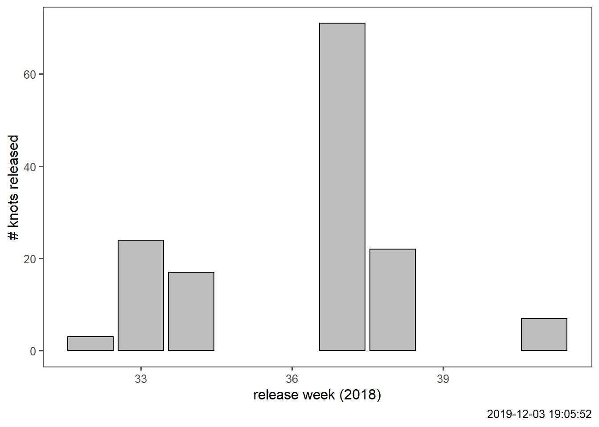

2 Introduction to getting data
This section focusses on accessing and downloading WATLAS data. This is done using functions in the WATLAS Utilities package.
2.1 Prepare watlasUtils and other libraries
# install the package watlasUtils from master branch using the following
# install.packages("devtools")
library(devtools)
# devtools::install_github("pratikunterwegs/watlasUtils")
library(watlasUtils)
# CRAN libraries
library(data.table)
library(ggplot2)
library(ggthemes)
library(purrr)
library(glue)2.2 Read in tag deployment data
# read deployment data from local file in data folder
tag_info <- fread("data/data2018/SelinDB.csv")
# filter out NAs in release date and time
tag_info <- tag_info[!is.na(Release_Date) & !is.na(Release_Time),]
# make release date column as POSIXct
tag_info[,Release_Date := as.POSIXct(paste(Release_Date, Release_Time, sep = " "),
format = "%d.%m.%y %H:%M", tz = "CET")]
# check new release date column
head(tag_info$Release_Date)## [1] "2018-09-14 20:00:00 CEST" "2018-09-13 15:30:00 CEST"
## [3] "2018-09-14 20:00:00 CEST" "2018-09-13 18:30:00 CEST"
## [5] "2018-08-11 15:00:00 CEST" "2018-08-16 18:04:00 CEST"

(#fig:plot_release_schedule)Knots released per week of 2018.